19 A 23 DE OUTUBRO DE 2026
A Confluência da Alta Cirurgia no Coração da Amazônia. Tecnologia e Natureza em Sintonia.
INOVAÇÃO, ALTA TECNOLOGIA E EXCELÊNCIA TÉCNICA
O Bariatric Channel traz para Manaus a segunda edição de um evento emblemático. Unindo o espírito majestoso e misterioso da selva amazônica à precisão cirúrgica de ponta mundial.
OS MESTRES
Experiência global reunida para elevar o nível da prática metabólica.
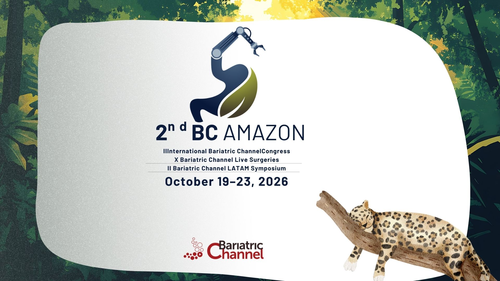
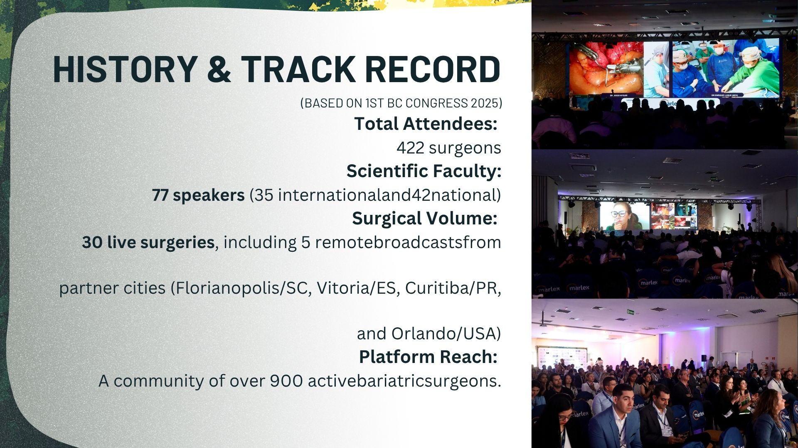
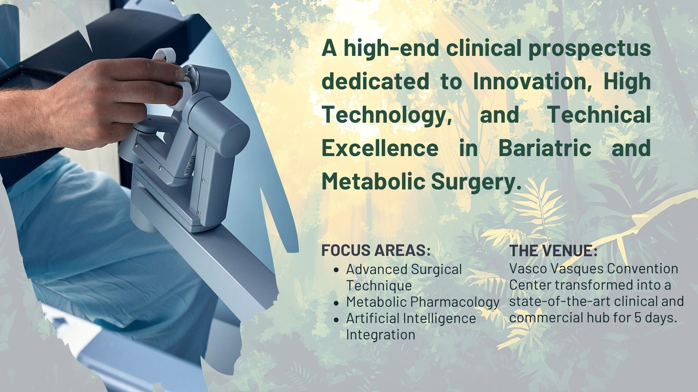
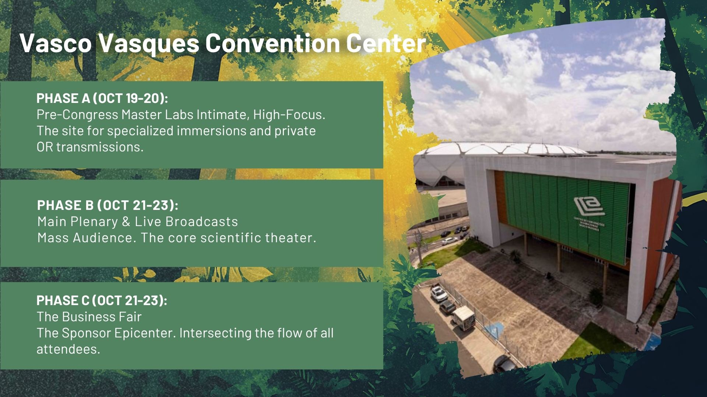
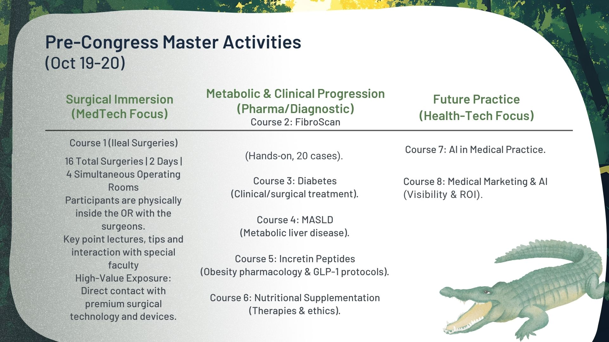
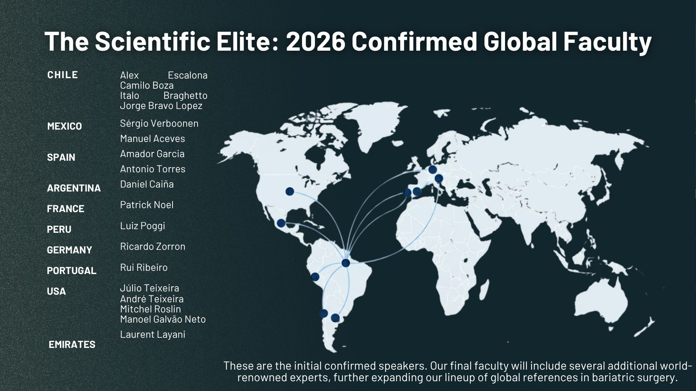
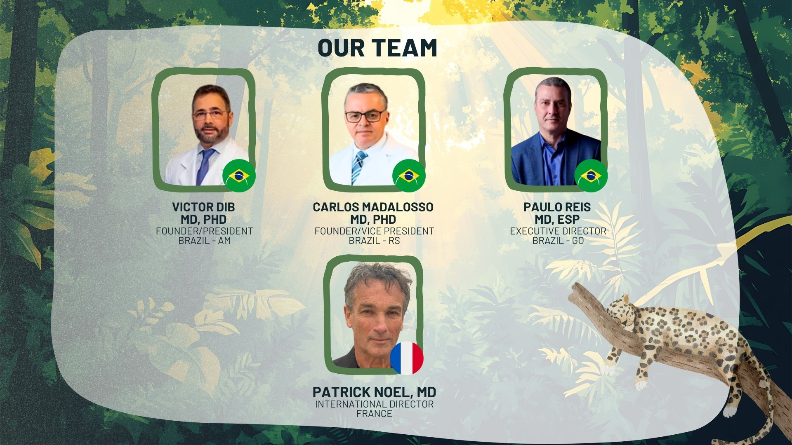
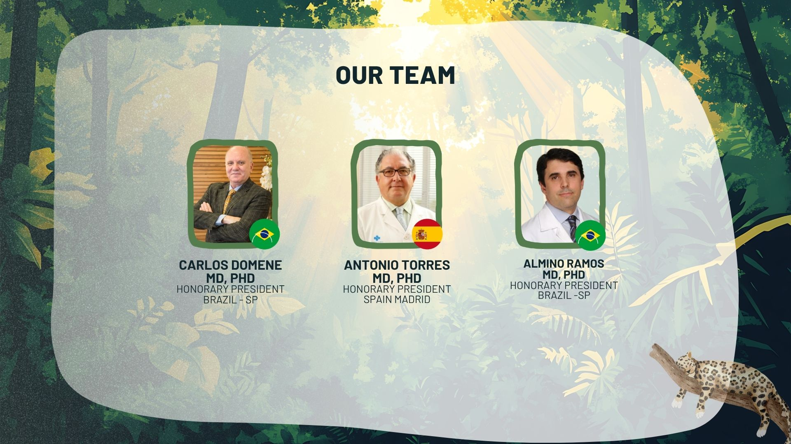
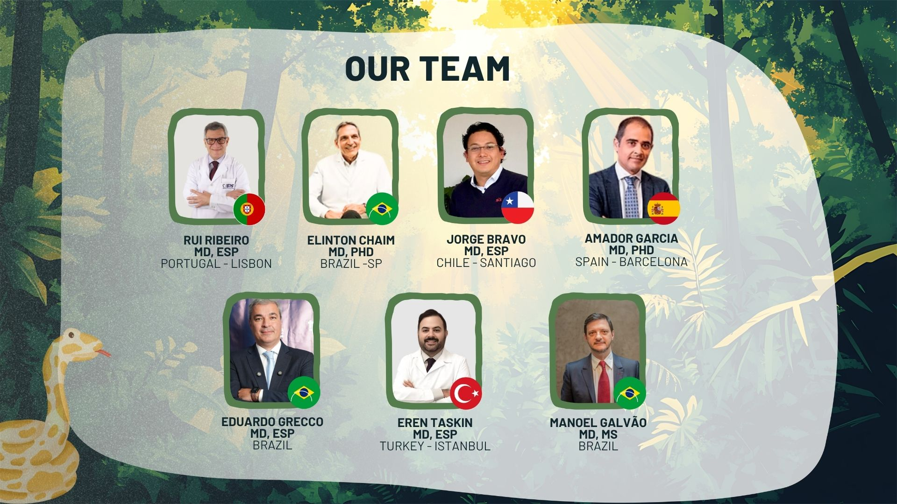
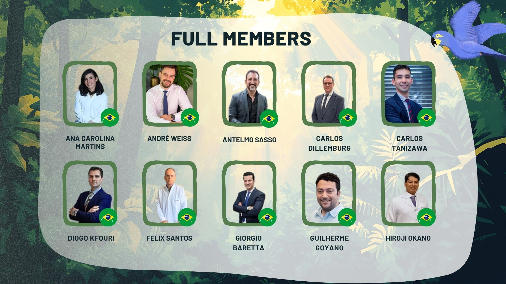
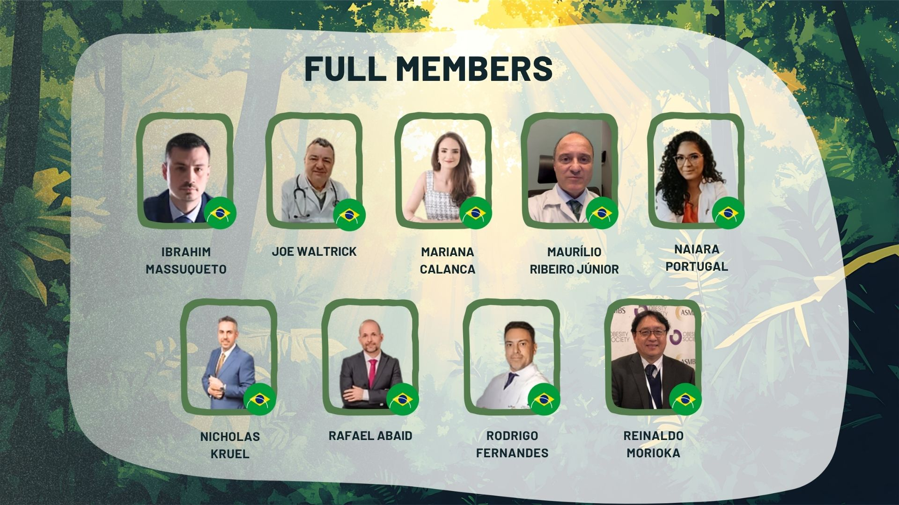
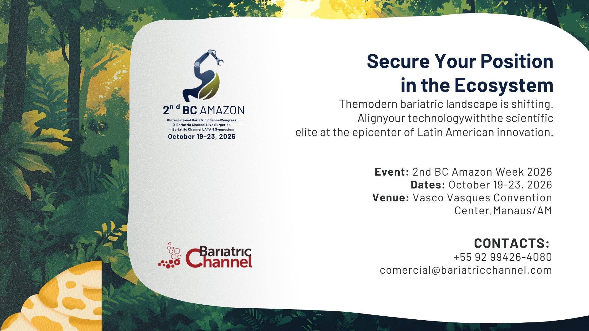